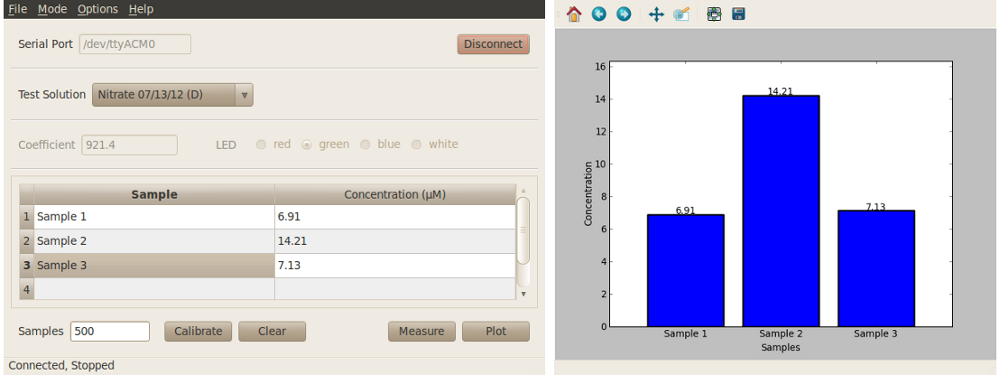

Colorimeter concentration program¶
This program measures the concentration of an unknown solution. For an example of a lab using this program see Lab 3: Ammonia and nitrate measurements.

Procedure: Connect-Select-Calibrate-Measure¶
- With the basic program window open as shown in the images below, enter the serial port corresponding to your device in the program window and click on the “Connect” button in the lower left-hand side.
- From the drop-down menu, select the standard curve corresponding to the solution you are going to be measuring. The menu contains both default and user generated standard curves. Optionally, the user may enter the coefficient and select the measurement LED manually.
- Calibrate sensor. Place a cuvette with your ‘blank’ measurement (e.g. water) into the colorimeter and click “Calibrate”. To check the calibration, click on “Measure” with your ‘blank’ cuvette still in place. The colorimeter should return zero absorbance and concentration values.
- Place a cuvette containing your sample into the colorimeter and click “Measure”. The concentration value will be displayed in the table. Edit the sample label e.g. “Ammonia sample 1”.
Additional software features¶
See Software features for more information on these features.
- Custom wavelengths.
- Save data at any point after calibration using the “File -> Save” menu item at the top of the program window.
- Change sample rate.
- Delete data points by select a row, right-click anywhere on your selection, and select “Delete” to remove those entries from the table. Note that the labels (Sample column) can be edited at any point.
- Plot data by clicking the “Plot” button. A bar graph will display the data in the same order as it is entered in the Table. x-axis labels are taken from the entries in the “Sample” column.